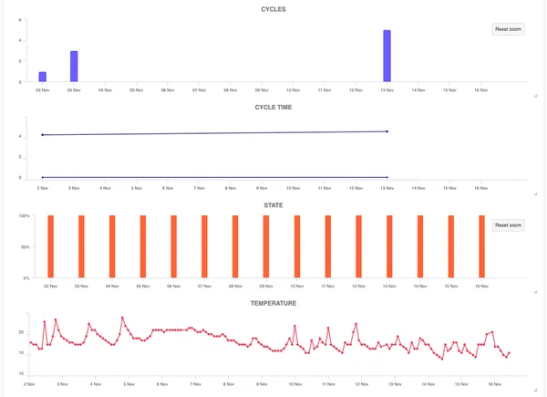

Zyklen zählen
Jeder Zyklus gezählt, direkt am Werkzeug.
Ein Stift am moldMIND X wird bei jedem Zyklus vom Werkzeug bewegt. Das Gerät zählt die Zyklen und berechnet die durchschnittliche Zykluszeit und Schließzeit.
- Im Werkzeug montieren. Setzen Sie das Gerät in die Tasche des Werkzeugs und befestigen Sie es mit zwei Schrauben.
- Werkzeug einmal schließen. Eine blaue LED blinkt kurz. Das bestätigt, dass der Zyklusstift richtig bewegt wird.
- In moldHUB mit dem Werkzeug verknüpfen. Per NFC, Seriennummer oder QR-Code.
- Daten lesen. Das Gerät sendet Zyklenstand, Zykluszeit, Temperatur und Standort standardmäßig einmal pro Stunde an moldHUB.
- Keine Verkabelung zur Maschine
- Zählt auch ohne Netz
- Akku hält mehrere Monate
